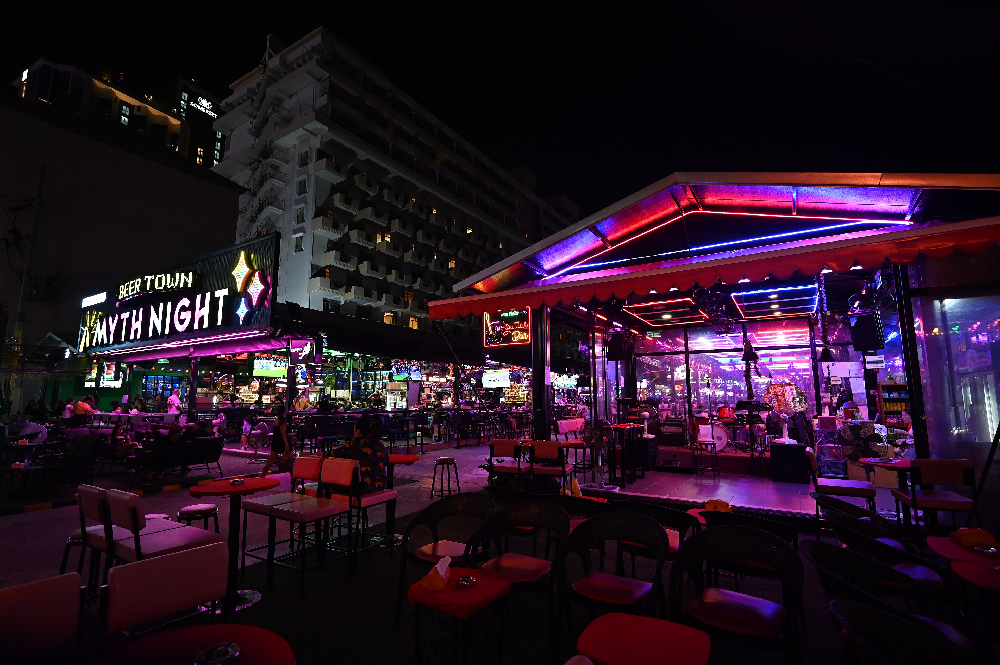
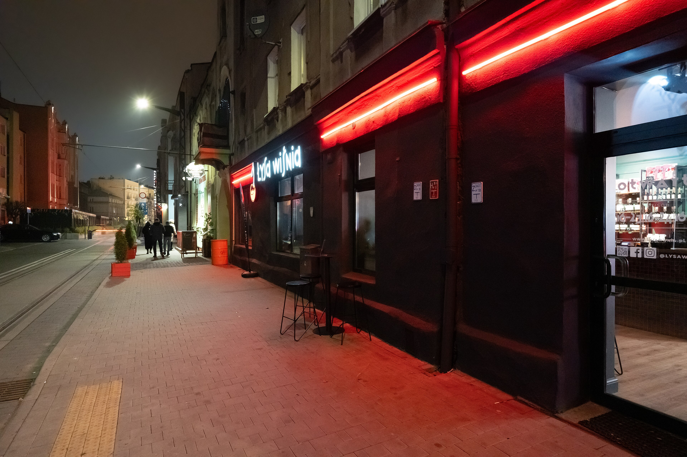
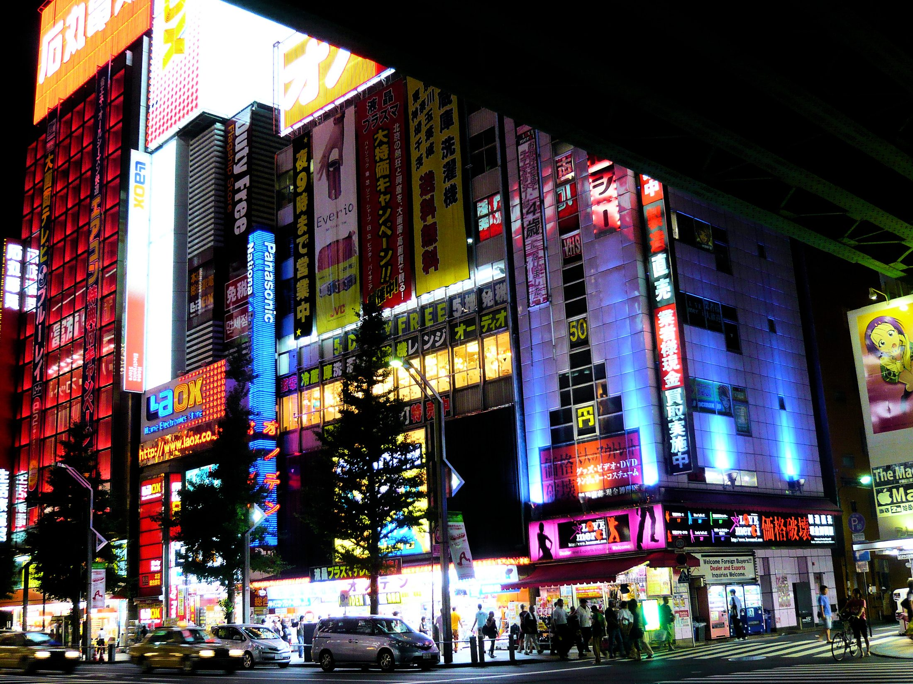
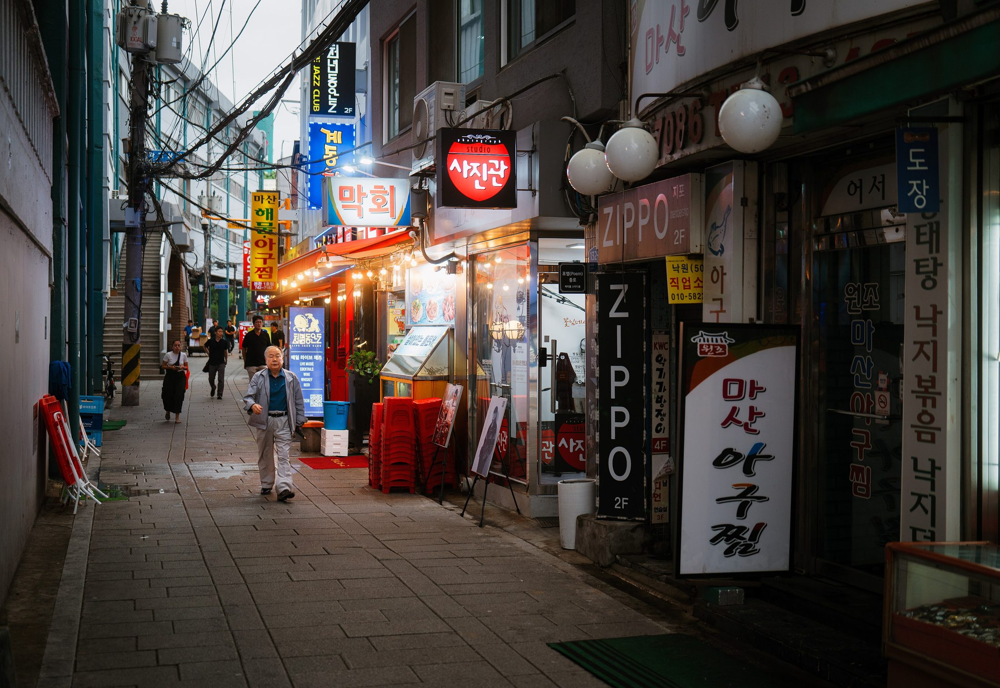
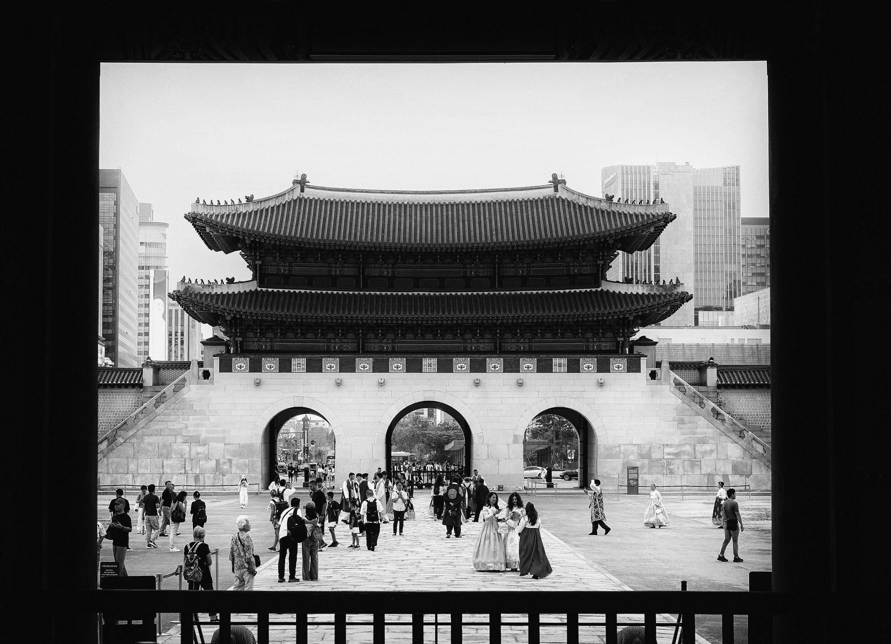

Layer 04 · Neon
Night
The city switches on when the city switches off.
Scroll

01
Neon
Letters
that hum
The signs speak a language of buzz and pink. OPEN. HOTEL. NOODLES. HOPE. Half the letters are broken, which is how you know they are telling the truth.
Photo · Unsplash
Neon



02
Insomnia
Four million people,
one shared dream
At 3 a.m. the city is a single organism dreaming about itself. The taxis are its blood. The bakeries are its first thought of morning.
Photo · Darien Attridge

03
Shadows
Where the light lands,
it leaves a twin
Every streetlamp casts a second city, longer and quieter than the first. Walk into it and the noise stops. Walk out and you have aged an hour.
Photo · Cuvii
Half the letters are broken. That is how you know they are honest.Layer four, Night